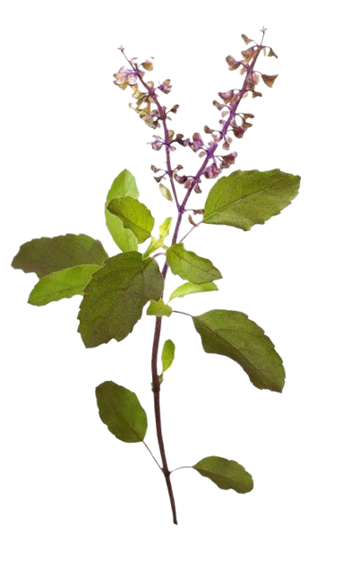

TATA
TEA



Tata Tea Gold Care brings you a premium tea experience with the finest blend of handpicked leaves and wellness. Specially crafted to support a healthy lifestyle, our tea offers the perfect balance of taste and care with every sip.Packed with antioxidants, Tata Tea Gold Care promotes overall well-being while providing a refreshing, rich flavor. It's the ideal choice for those looking to nourish their body and rejuvenate their senses with each cup.We believe in making tea more than just a beverage—it’s a way of life. Tata Tea Gold Care is infused with the goodness of nature, making it your ideal partner in maintaining your health goals while enjoying a great taste.